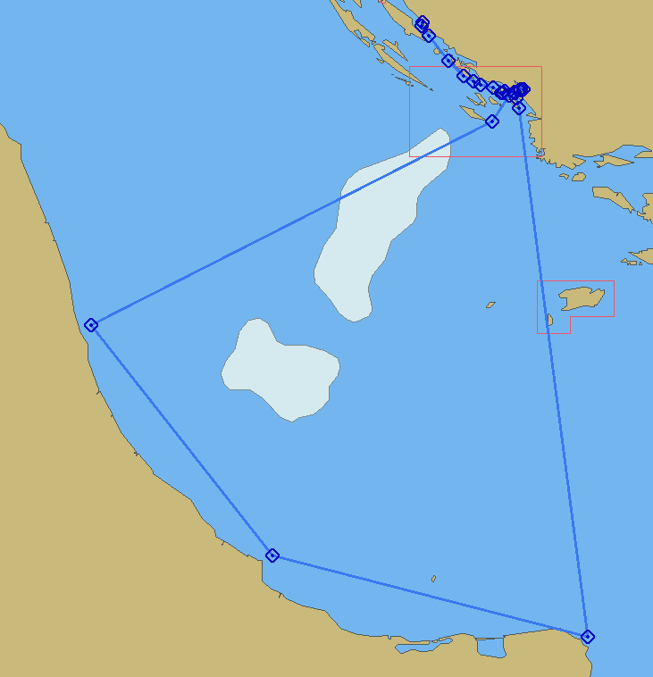
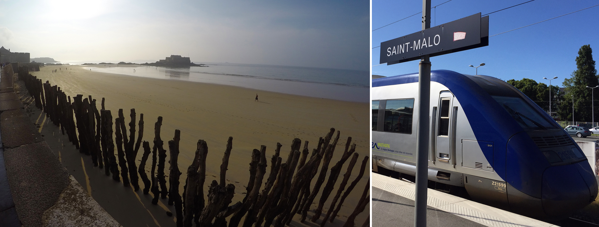
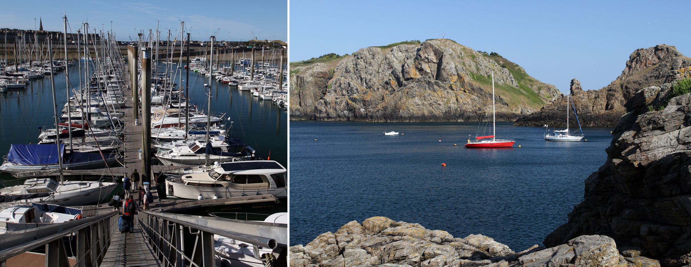
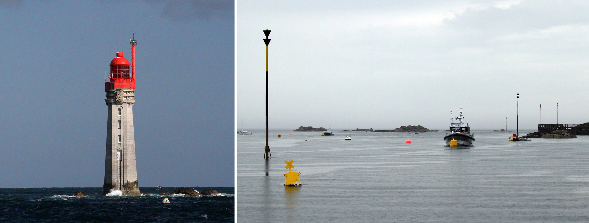
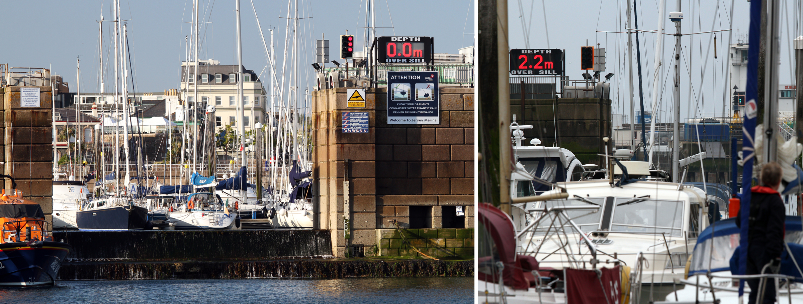

Zdokonalovací a kondiční plavby, speciální kurzy
Pro velký zájem jsme připravili plavby zaměřené na získání plavební praxe v oblasti plavby "B" více než 10 Nm od pobřežní linie. Plavby jsou koncipovány jako nonstop plavby s krátkými zastávkami v cílových místech tak, aby zajemci po jejich absolvování měli dostatek praxe v plavbě v náročnějších podmínkách. Důraz je kladen dle typu plavby na terestrickou navigaci bez použití GPS dále od břehu, střídání hlídek, plánování trasy, plavbu v přílivových vodách.
Offshore zdokonalovací plavba na MALTU - 2026
| Termín | Cena | Volná místa | Loď / kapitán | |
|---|---|---|---|---|
| 26. 4. - 10. 5. 2025, (2 t.) | 24 900,- Kč | PROBĚHL | Zdeněk Teubner | Rezervovat |
| 25. 4. - 9. 5. 2026, (2 t.) | 24 900,- Kč | 4 | bude upřesněn | Rezervovat |
Oblíbené plavby na Maltu, které jsou vždy plně vyprodány pořádáme letos již dvanáctým! rokem. Cílem je naplutí 1500 Nm. Plavba je zejména vhodná pro zájemce, kteří potřebují prokázat praxi pod vedením pro průkaz velitele jachty mořské plavby "B" a naplout 1500 Nm. Plavba je vhodná i pro kapitány s praxí v příbřežních vodách jako zdokonalovací plavba. Plavbu vedou zkušení kapitáni.
Okruh západním středomořím
Trasa a cíl plavby:
Pokračování oblíbených plaveb západním středomořím možná už po 30-té... Letos na luxusní velké a rychlé plachetnici KUFNER 54 exclusive! Kondiční plavba pro kapitány v oblasti „B“, pro zkušenější jachtaře, kterým už nestačí odpolední ostrovní slalom „naším domácím Jadranen“. Tato plavba má dva hlavní cíle: doplout na Maltu – nejjižnější členský stát EU a uplout kvalifikačních 1 500 NM. To je opravdová jachtařská a meteorologická výzva i když ne vždy ji dosáhneme. Překonáme Bonifáčský průliv s pověstnými prudkými západními větry, absolvujeme non-stop více než 300 NM úsek mezi jihem Sardinie a Maltou, z moře bychom měli zahlédnout vrchol Etny a pak vyzveme Messinský průliv s pověstnými víry a hlubomořskými proudy. Dle možností navštívíme vybraná místa na Korsice, Sardinii, Maltě, Sicílii, Liparech.
Budeme navigovat klasicky terestricky (samozřejmě s průběžným ověřováním GPS), budeme plánovat etapy a kotviště dle aktuálních povětrnostních podmínek, procvičíme si VHF komunikaci s marinami, plavbu s genakrem (volitelně po domluvě s posádkou a platbě za gennaker). Pokud čas dovolí, můžeme trénovat přístavní manévry. Pokud počasí a bohové moře nebudou proti, tak to všechno můžeme stihnout.
Trasa plavby podrobně:
I. Etapa Start v Salernu, cíl Bonifáčský průliv.
Start v neděli po sobotním převzetí, vyzkoušení a seznámení se s lodí před velkou plavbou. Etapa prověří
správnost nastavení nepřetržitých služeb při předpokládaném křižování proti převládajícím NW větrům.
Doplnění zásob ideálně na levnější Sardinii.
II. etapa Bonifáčský průliv – jih Sardinie. Předpoklad zadního nebo zadobočního kurzu podél úchvatného pobřeží Sardine. Na jejím jižním pobřeží opět doplníme zásoby před třetí, nejdelší etapou.
III. etapa Jih Sardinie – Malta. Nejdelší non-stop úsek plavby, více než 300 NM „mořskou pustinou “ – opravdový off shore jachting. Přibližně uprostřed etapy mineme ostrov Isola di Pantelleria. Kdo z posádky zahlédne jako první maják na mysu Punta Spadillo, obdrží pochvalu kapitána. A pak už hlavní cíl plavby – Malta, opět s doplněním zásob.
IV. etapa Malta – Liparské souostroví Podél východního pobřeží Sicílie, Messinským průlivem na sopečné ostrovy Stromboli v Liparském souostroví. Po zdolání hlavní mety plavby – Malty, můžeme zkusit zdolat i výškovou metu, vulkán Stromboli. Samozřejmě doplnění zásob. etapa Liparské souostroví – Salerno
Závěrečných cca 130 NM severním kurzem do domovské maríny v Salernu. To už by pro opět o kousek zkušenější mořské vlky neměl být zásadní problém. Poslední etapou už bude cesta zpět domů, do střední Evropy. Co se týče uplutých Nm, bezpečnost je vždy na prvním místě, občas je potřeba někde zastavit. V reálu se obvykle napluje 850 - 1300 Nm, můžete si být jisti, že tahle plavba je koncipována tak, abyste za 14 dní upluli maximum.
Cena:
Cena za účast na 2-týdenní plavbě je 24.900,- Kč na osobu. V této částce je
zahrnuto místo na lodi, tranzitlog vč.úklidu a lůžkovin a služby kapitána a instruktora. Cena nezahrnuje
dopravu do Salerna, poplatky během plavby – přístavní poplatky, naftu , genakr, stravu posádky a stravu
a dopravu kapitána.
Přihlášení:
Pro účast na plavbě nás prosím kontaktujte na: info@yachtnet.cz, 233 354 050, 603 419 645,
obratem Vám zašleme přihlášku.
Malá velká plavba
Z Chorvatska do Itálie a zpět - 2026
| Termín | Cena | Volná místa | Loď / kapitán | |
|---|---|---|---|---|
| 10. 5. - 17. 5. 2025 | 16 900,- Kč | PROBĚHL | Oceanis 46.1 (2020) | Rezervovat |
| 9. 5. - 16. 5. 2026 | 16 900,- Kč | 6 | Oceanis 46.1 (2020) | Rezervovat |
Vzhůru na palubu,
dálky volají...
Ano, dřív nebo pozdějí uslyší toto nezkrotné volání každý, komu se v životě podařila úžasná věc – vyplout pod plachtami. Pro někoho to mohlo být snadné, jiný zase musel o tuto dobrou věc hodně zabojovat. Všichni zde ale mají něco společného – s každým dnem prožitým pod plachtami je obzor blíž a blíž. Až nakonec se zdá být celý svět docela malý.
Celý popis plavby
Je ale fakt malý. K obzoru je to coby jeden kamenem dohodil. Obzor je fakticky vzdálený pouhé 3 nautické mile, za kterými se začíná opravdové dobrodružství. K slovu, Kolumbus udával vzdálenosti v počtu... obzorů. Přesně tak to říkal: „... a všichni jsme se domnívali, že země nemůže být dál, než deset obzorů od nás“.
Plavba je určená pro mírně pokročilé mořeplavce, kteří mají v plánu opustit chorvatské vody a vydat se do jiných pěkných krajů. Na palubě lodi Oceanis 46.1 vybaveného AIS transponderem, pod vedením zkušeného kapitána každý divoký námořník pozná vše, co taková větší plavba obnáší. Aby byl na svou vlastní mezinárodní plavbu dobře připraven.
Plán plavby bude spáchán následujícím způsobem.
(Možná trasa plavby je uvedena na obrázkua může se lišit od skutečné)

V neděli ráno odpočatá a aktivní posádka bleskově posnídá a kapitán s posádkou probere denní řád a obeznámí jí s průběžnými úkony, díky kterým se loď bezpečně posouvá kupředu. Po zvážení meteorologické situace se posádka vydá na plavbu už rovnou v neděli nebo hned následující den. Výsostné vody zůstanou za zádí za pouhých 5-7 hodin. Cílem bude Itálie.
Pak už zbývá vyhnout se dopravním plavidlům, ropným plošínam a cvičícímu válečnému loďstvu, zdárně dorazit k Itálii, zvesela navštívit několik pěkných přístavů nebo tratorií, překonat veškeré nástrahy otevřeného moře na cestě zpět a po nezbytné noční plavbě (která už to bude do počtu?) dorazit v pátek navečer do domovského přístavu v Biogradu n/m.
V sobotu – odjezd domu.
Během týdne poznáte přípravu lodí a analýzu počasí, zažijete pevný řád a noční hlídky, upevníte si praktické dovednosti a dopilujete normální navigaci, na vlastní kůži prožijete pravidla plavby a přednosti v davu ocelových gigantů. Celkem to čítá rozhodně přes 300 majlí rozmanitých zkušeností.
A budete připraveni napříště vyplout za obzor samostatně. To vám ze srdce přeje Neptun a celý tým YachtNetu.
Jaká je cena a způsob dopravy?
Cena za účast na přeplavbě je stanovena ve výši 16.900,- Kč na osobu. Cena neobsahuje
vlastní dopravu, posádka zajišťuje dopravu kapitána na místo a zpět, poplatky během plavby, nákup zásob a paliva do lodi.
Přihlášení:
Pro účast na plavbě nás prosím kontaktujte na: info@yachtnet.cz, 233 354 050, 603 419 645,
obratem Vám zašleme přihlášku.
Přístavní manévry na katamaránu - 2026
| Termín | Cena | Volná místa | Loď / kapitán | |
|---|---|---|---|---|
| 25. 10. - 28. 10. 2025 | 13 900,- Kč | PROBĚHL | Katamarán | Rezervovat |
| 28. 10. - 1. 11. 2025 | 13 900,- Kč | PROBĚHL | Katamarán | Rezervovat |
| 25. 4. - 28. 4. 2026 | 13 900,- Kč | OBSAZENO | Katamarán | Rezervovat |
| 29. 4. - 2. 5. 2026 | 13 900,- Kč | OBSAZENO | Katamarán | Rezervovat |
| 24. 10. - 27. 10. 2026 | 13 900,- Kč | VOLNÁ MÍSTA | Katamarán | Rezervovat |
| 28. 10. - 31. 10. 2026 | 13 900,- Kč | VOLNÁ MÍSTA | Katamarán | Rezervovat |
Chystáte se poprvé na katamarán? Chcete si vše v klidu vyzkoušet? Kurz bude zaměřen na manévrování v přístavu, manévry na plachty se standartním oplachtěním (full batten main sail, standart sail, classic sail) - specifika refování u katamaránu v závislosti na síle větru a specifika refování standartní plachty. Na kurzu bude maximálně 6 osob a instruktor.
Více informací
Kurz bude probíhat na katamaránu cca 40 stop.
V ceně kurzu je obsaženo: místo na lodi, instruktor, poplatky na základně (transitlog, úklid), pojištění lodě a stání v domovské maríně. Cena neobsahuje stravu, dopravu do místa konání kurzu (vlastní, individuálně po dohodě účastníků), spotřebované pohonné hmoty do lodě, pobytovou taxu (1,5 EUR/osoba/den) a ev. poplatky v jiné než domovské marině. Posádka zajišťuje rovněž dopravu a stravu pro kapitána.
Přihlášení:
Pro účast na plavbě nás prosím kontaktujte na: info@yachtnet.cz, 233 354 050, 603 419 645,
obratem Vám zašleme přihlášku.
Přístavní manévry na plachetnici - 2026
| Termín | Cena | Volná místa | Loď / kapitán | |
|---|---|---|---|---|
| 18. 4. - 21. 4. 2026 | 12 900,- Kč | OBSAZENO | Bavaria 37 | Rezervovat |
| 22. 4. - 25. 4. 2026 | 12 900,- Kč | OBSAZENO | Bavaria 37 | Rezervovat |
| 9. 5. - 12. 5. 2026 | 12 900,- Kč | OBSAZENO | Bavaria 37 | Rezervovat |
| 13. 5. - 16. 5. 2026 | 12 900,- Kč | OBSAZENO | Bavaria 37 | Rezervovat |
| 17. 10. - 20. 10. 2026 | 12 900,- Kč | VOLNÁ MÍSTA | Bavaria 37 | Rezervovat |
| 21. 10. - 24. 10. 2026 | 12 900,- Kč | VOLNÁ MÍSTA | Bavaria 37 | Rezervovat |
Pojeďte si osvěžit základní manévry v přístavu před sezonou. V klidu a s maximální intenzitou se po 3 dny budete věnovat výcviku přístavích manévrů, práci s lany i správnému převzetí lodě. Kurz je vhodný pro všechny účastníky kapitánských kurzů, kteří necítí jistotu v ovládáni lodi v marině a chtěli by si vše maximálně intenzivně zopakovat ještě před sezonou. Na kurzu budou maximálně 4 osoby a instruktor.
Více informací
Kurz bude probíhat na plachetnici typu Bavraia 37, nebo podobné.
V ceně kurzu je obsaženo: místo na lodi, instruktor, poplatky na základně (transitlog, úklid), pojištění lodě a stání v domovské maríně. Cena neobsahuje stravu, dopravu do místa konání kurzu (vlastní, individuálně po dohodě účastníků), spotřebované pohonné hmoty do lodě, pobytovou taxu (1,5 EUR/osoba/den) a ev. poplatky v jiné než domovské marině. Posádka zajišťuje rovněž dopravu a stravu pro kapitána.
Přihlášení:
Pro účast na plavbě nás prosím kontaktujte na: info@yachtnet.cz, 233 354 050, 603 419 645,
obratem Vám zašleme přihlášku.
Plavba ze St.Malo k Normanským ostrovům
| Termín | Cena | Volná místa | Loď / kapitán | |
|---|---|---|---|---|
| 2. 9. 2023 – 9. 9. 2023 | 16.900,- Kč | PROBĚHL | MUDr. Libor Chrastil | REZERVOVAT |
Pro zájemce o plavbu v přílivových vodách je připravena oblíbená plavba ze St.Malo k Normanským ostrovům, letos již 5-ty ročník pod vedením MUDr. Libora Chrastila!
Popis plavby ze St. Malo od kapitána Libora Chrastila
Plavba ze St. Malo k Normandským ostrovům
Kdy se plavba koná?
Týdenní výcviková plavba v přílivových vodách kanálu La Manche se koná v termínu 2. 9. 2023 –
9. 9. 2023
Co si můžeme představit když se řekne St.Malo?
Legendární bretaňský přístav s bohatou historií zasahující do raného středověku. Magické město
žijící
vůní moře a nekonečným rytmem střídání přílivu a odlivu s věčným zaplavováním a odhalováním
dna moře a stále se měnícím pohledem na ostrov Le grand Bé s hrobem René de Chateaubrianda.

Město, kde jako málokde, stavěli obyvatelé pomníky korzárům. Odtud v 15. století vyplouval Jacques Cartier a hledal severozápadní cestu do Číny, aby nakonec zmapoval Newfoundland. Odtud v 17. století vyplouval Jacques Gouin de Beauchene k Falklandům a tak podle námořníků ze St. Malo vznikl i nález souostroví Malvíny. Od pradávna ze St. Malo vyplouvají na moře plachetnice – a je tomu tak dodnes. Je to místo, kde se rozechvěje srdce každého jachtaře.
Kdy a kam poplujeme?
Týdenní plavbu zahájíme převzetím lodi v sobotu dne 3. 9. 2022 v přístavu port des Bas
Sablons, St. Malo. Záměr plavby je navštívit Normanské ostrovy: Jersey, Guernsey, Sark (případně dle podmínek Alderney, Iles Chausey nebo nějáké místo na francouzské pevnině). Návrat bude opět do Saint Malo.

Co je cílem naší plavby a pro koho je plavba určena?
Náš týden chceme věnovat seznámení se s plavbou na plachetnici ve vysoce přílivových vodách v krásné,
ale náročné jachtařské oblasti. Vzhledem k velkému skoku přílivu a silným přílivovým proudům
je v této
oblasti jak navigace, tak logistika značně odlišná od praxe ve vnitřních mořích. Vše v klidné a přátelské atmosféře s vědomím obtížnosti plavby v této oblasti s pokorou k počasí, které zde vládne.
Rádi bychom do posádky pozvali již zkušenější jachtaře, kteří mohou poznatky z této oblasti uplatnit dále při vlastních plavbách v různých částech světa, kde se mohou setkat s účinky přílivu. Posádku bude tvořit 5 účastníků + kapitán. Plavba poskytuje možnost zápočtu námořních mil pro zájemce o průkaz B – Yachtmaster Offshore.
Součástí naší plavby bude rovněž poznání místního koloritu. Nejen Bretaň, konkrétně Saint Malo - odpradávna místo s velkou námořní tradicí - ale i přístavy na Normanských ostrovech, vše jsou místa, která stojí za to navštívit. Budeme se pohybovat mezi tradicí francouzskou a anglickou, jakkoliv Bretaň není jen Francie a ostrovy nejsou jen Anglie, jsou to ostrovní státy s velkou mírou nezávislosti.

Co nás čeká za plavby i na břehu?
Budeme sdílet běžné starosti námořníka na plachetnici a navíc budeme muset určovat správný čas
vplutí do
přístavů a za plavby pak kalkulovat s rychlostí a směrem přílivových proudů. K tomu
budeme pracovat s přílivovými tabulkami, atlasem proudů a charakteristikou standartních i sekundárních
přístavů. Skok
přílivu může být až kolem 10 metrů a rychlost proudů může dosáhnout až 5 uzlů. Oblast plavby je
obecně
bohatá na vítr, převládající je SW - W - NW - N. Přílivy a povětrnostní podmínky jsou tam
zcela jistě
hodny respektu a my se jim pokorně podřídíme. A to vše hlavně v klidu a pohodě, v kamarádské
posádce. Za
odměnu se nám otevřou skutečně podmanivé scenerie a seznámíme se s naturelem Bretonců i ostrovanů.
Normanské ostrovy tvoří dvě správní oblasti: Bailiwick of Guernsey a Bailiwick of Jersey. Tyto oblasti netvoří část Spojeného království, ale jsou, podobně jako ostrov Man, dependencí britské koruny. Obě ostrovní državy mají rozsáhlou autonomii, včetně vlastních zákonodárných sborů. Normanské ostrovy mají status přidruženého člena Evropské unie. V obou državách (ve volném překladu Bailiwick = "šafářství" či "fojtství") obíhá vlastní měna – jerseyská a guernseyská libra, panuje zde čilý turistický ruch a bezcelní obchodní zóna.
Výjimečný je malý ostrov Sark, který je součástí Bailiwick of Guernsey, ale má další zvláštní privilegia. Je to stále v podstatě stát s feudálním zřízením, který je od 16. století spravován jako léno dědičného pána (seigneur), podle rodové zásady. Na ostrově platí dodnes zákaz automobilů.

Jaká je cena a způsob dopravy?
Cena za účast na plavbě je 16.900,- Kč na osobu. Tato částka dává právo nastoupit na
palubu a být členem posádky. Zahrnuje ubytování v dvoulůžkové kajutě, poplatky placené na základně za
úklid a plyn na vaření. Lůžkoviny vlastní (spacák), nebo za poplatek možné doobjednat. Každý
účastník obdrží také Jachtařskou knížku, kde mu kapitán po skončení plavby potvrdí upluté míle. Cena neobsahuje dopravu
do St. Malo, poplatky během plavby, nákup zásob a paliva, stravu a dopravu pro kapitána.
Dopravu do St.
Malo domluvíme operativně při setkání posádky. Nejspíše 1-2 vozidly dle možností, nebo letecky do Paříže a dále pak TGV do St. Malo.V přístavu je
prostorné, sice nehlídané, ale bezpečné parkoviště. Není zatím známo, že by v Bretani bylo
zaparkované
auto nějak ohroženo.
Kapitán a organizátor plavby MUDr. Libor Chrastil a tým společnosti YachtNet přejí budoucí posádce dobrý vítr do plachet, hodně vody pod kýlem (to zejména!) a vždy šťastný návrat.